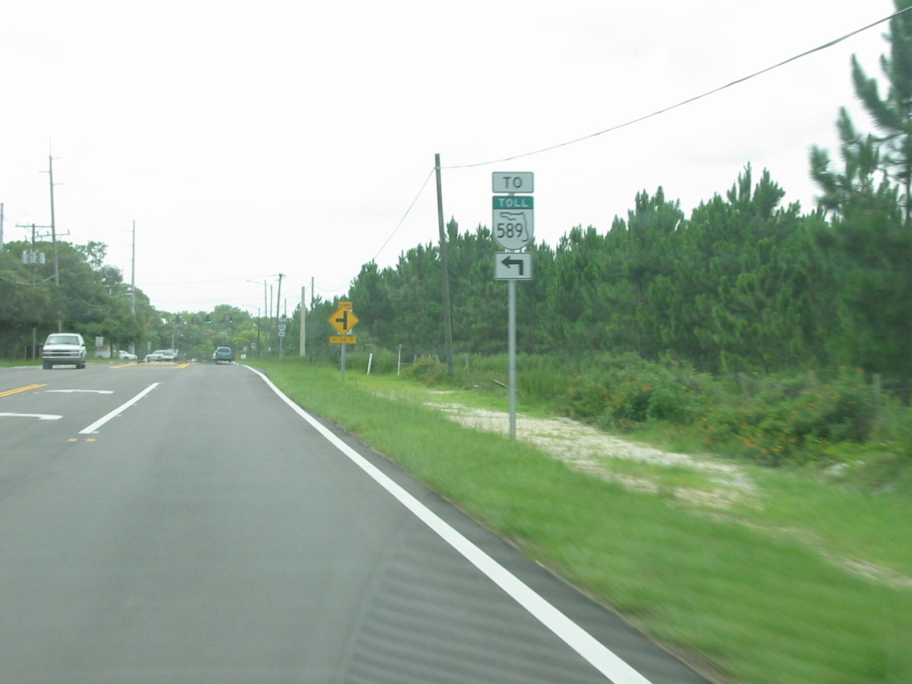

Street lighting should respond to public safety needs.
Does someone have to get hurt first? The Community Plan takes a restrictive approach to street lighting and allows lighting when public safety is at risk.
Why it matters
Limited street lighting can make it more difficult and dangerous to travel at night, increasing the risk of crashes and affecting the safety of residents, students, commuters and emergency responders. It directly impacts the health, safety and welfare of our community.


Community Plan rule
“Street lighting may be considered when public safety is at risk.”
Read the Community PlanSource and page references
Source: Livable Communities Element. Livable Communities compilation dated June 26, 2026. Effective dates: p. 3. County framework relationship: pp. 4–5. Keystone–Odessa: pp. 17–27. Transportation and lighting: p. 24.
Actual safety needs and FHWA guidance
Actual safety needs
Adequate street lighting is important for:
- Visibility for drivers
- Intersections and high-risk areas
- Pedestrians and cyclists
- Night travel and daily commutes
Research
FHWA explains that modern lighting can precisely target where light is needed while minimizing spill into the night sky and neighboring properties. Rural character should drive better design, not end the safety discussion.
Read FHWA guidance on lightingSource and page references
Source: Federal Highway Administration Lighting safety countermeasure. FHWA-SA-21-050, Applications and Considerations. Modern lighting control and reduced spill; general engineering guidance.